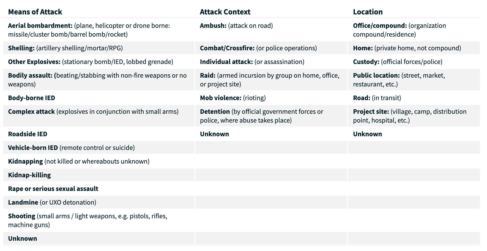
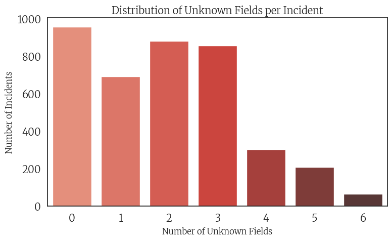
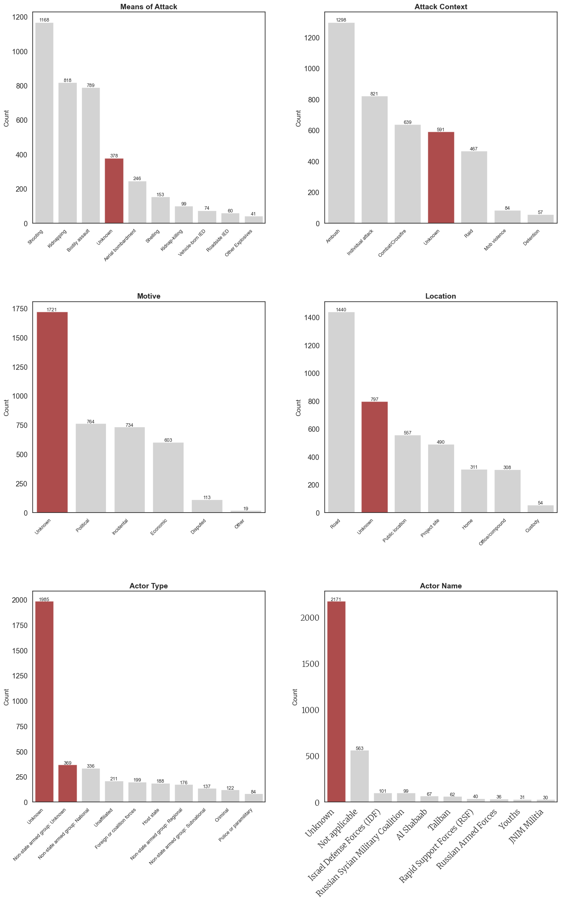
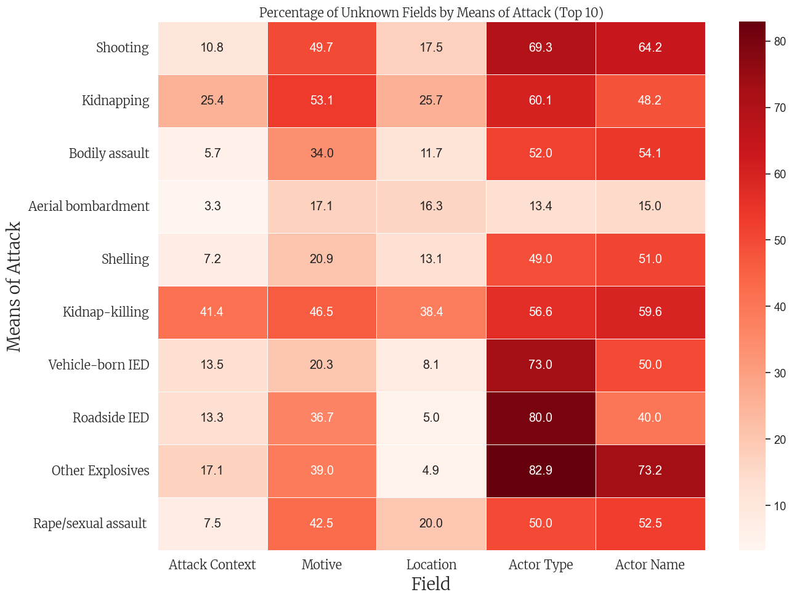

Uncovering the Unknown - Insights into Violence Against Humanitarian Aid
Humanitarian organizations exist with one ultimate purpose: to alleviate suffering and protect those in need. Yet, they often operate under extreme resource constraints. When attacks on aid efforts occur, the focus remains on saving lives—not documenting the tragedy. As a result, crucial information about the nature of these attacks—how they happen, why they happen, who is behind them—too often goes unrecorded. This lack of data severely limits our ability to craft effective strategies to prevent future harm and coordinate global action. Distressingly, the majority of records list these critical details as “unknown.” But through thoughtful data exploration and visualization, we can begin to uncover hidden patterns, illuminate what’s been overlooked, and inch closer to understanding—and ultimately preventing—the violence that continues to endanger humanitarian missions.
So where do we begin? We look at the data we do have. The AWSD dataset contains the following variables, for each unit of observation representing an attack:
Incident ID
Date
Country information
Location information: region, district, city
Latitude and Longitudinal coordinates
The count of people harmed by humanitarian aid organization:
UN
INGO
ICRC
NRCS and IFRC
An NNGO
Other
The number of nationals:
Killed
Wounded
Kidnapped
Affected
The number of internationals:
Killed
Wounded
Kidnapped
Affected
The total number of humanitarian aid workers:
Killed
Wounded
Kidnapped
Affected
The sex of victims
Means of attack
Attack context
Location of attack
Motive
Actor type
Actor name
Details
If the attack is verified
Source
For further detail on what these variables indicate, please visit the AWSD Codebook.
Take a look at the six bolded variables listed above: Means of attack, Attack context, Location of attack, Motive, Actor type, and Actor name. These are columns contain categorical, descriptive data representing important security details of the attacks. This information is very important to study for planning strategic prevention efforts and crisis responses. The attached image, taken from the official website of the AWSD database, breaks down and clarifies some of these variables, but check out AWSD codebook for more information as well.

If we had some insight into how and why humanitarian aid workers tend to be violently targeted, we could be able to know how to keep our workers safer. However, examining this data uncovers the reality that the majority of events have missing information for at least one of these variables. The visual and analytical exploration below highlights some of the interactions between these variables in terms of how much information they have missing.
Distribution of “Unknowns”
The following visualizations will illuminate how many attack events have “unknown” information for the six variables of interest we discussed above: Means of attack, Attack context, Location of attack, Motive, Actor type, and Actor name. The first plot shows how many events are missing information for 0 through 6 of these variables, also referred to as fields. For example, values in the “0” column represent events where all six variables are known and reported, while values in the “6” column represent events where none of the six variables have known information. This provides a high-level view of data completeness, which we will explore in more detail below.
Distribution of Unknown Fields
Code
import pandas as pdimport numpy as npfrom IPython.display import display, HTMLimport matplotlib.pyplot as pltfrom matplotlib.colors import to_rgbaimport seaborn as snsimport matplotlib.font_manager as fm# Path to the merriweather font font_path ='/Users/vivianaluccioli/Library/Fonts/Merriweather-VariableFont_opsz,wdth,wght.ttf'merri_font = fm.FontProperties(fname=font_path)merri_font_bold = fm.FontProperties(fname=font_path, weight='bold')# set theme: white backgroundsns.set_theme(style="white", font_scale=1.2)plt.rcParams['axes.grid'] =False# data df = pd.read_csv('../data/cleaned_security_incidents.csv')# BAR PLOT unknown_cols = ['means_of_attack', 'attack_context', 'location', 'motive', 'actor_type', 'actor_name']# new column: counts of unknowns per rowdf['unknown_count'] = df[unknown_cols].apply(lambda row: sum(row.str.lower() =='unknown'), axis=1)unknown_summary = df['unknown_count'].value_counts().sort_index(ascending=False)plt.figure(figsize=(8, 5))sns.barplot(x=unknown_summary.index, y=unknown_summary.values, palette='Reds_d')plt.title('Distribution of Unknown Fields per Incident', fontsize=14, fontproperties=merri_font)plt.xlabel('Number of Unknown Fields', fontsize=12, fontproperties=merri_font)plt.ylabel('Number of Incidents', fontsize=12, fontproperties=merri_font)plt.xticks(fontproperties=merri_font)plt.yticks(fontproperties=merri_font)plt.tight_layout()plt.show()

This reveals that just under 1,000 events contain complete information for all six critical fields. This accounts for roughly one-quarter of the 3,957 events in the dataset—meaning that approximately 75% of violent acts against humanitarian aid workers lack full documentation. Notably, the number of events with two or three “unknown” fields also approaches 1,000, highlighting the widespread gaps in reporting.
Distribution of “Unknowns” Within Each Field
The following plots break down how many events contain “Unknown” compared to other categorical level entries for each of the six fields of interest. In the table comparisons, the categorical variable levels are listed in order of how frequently they appear. “Unknown” rows are highlighted in a darker shade.
Please note that the data in Table 6: Actor Name was modified to only display values in which the count of rows containing that categorical value was greater than 20. This modification was performed so that the table would not be unnecessarily long. If you would like to look through all levels of this variable, please see the appendix.
The following side-by-side plots illustrate the distribution of unknown entries across the six variables of interest. Notably, for Motive, Actor Type, and Actor Name, the number of incidents labeled “Unknown” far exceeds any known category. In contrast, while the Means of Attack, Attack Context, and Location are more frequently recorded with information, “Unknown” still ranks among the most common entries for these variables.
The plots below visually highlight the quantity of “Unknown” rows (in red) alongside the other types of entries for that field (in gray).
Code
def plot_count_tables(df, variables, titles, nrows=3, ncols=2, figsize=(16, 24)): fig, axes = plt.subplots(nrows=nrows, ncols=ncols, figsize=figsize) axes = axes.flatten()for i, (var, title) inenumerate(zip(variables, titles)):# Get value counts and keep only top 10 counts = df[var].value_counts().nlargest(10).reset_index() counts.columns = ['Category', 'Count']# Create bar plot with gray color for non-unknown categories sns.barplot(x='Category', y='Count', data=counts, ax=axes[i], color='lightgray')# Highlight any category containing "unknown" (case insensitive) in redfor j, cat inenumerate(counts['Category']):if'unknown'instr(cat).lower(): axes[i].patches[j].set_facecolor('darkred') axes[i].patches[j].set_alpha(0.7)# Customize plot axes[i].set_title(title, fontsize=14, fontweight='bold') axes[i].set_xlabel('') axes[i].set_ylabel('Count', fontsize=12)# Set x-axis labels at 45-degree angle axes[i].tick_params(axis='x', rotation=45)for tick in axes[i].get_xticklabels(): tick.set_fontsize(9) tick.set_ha('right')# Add value labels on top of each barfor p in axes[i].patches: height = p.get_height()if height >0: axes[i].text(p.get_x() + p.get_width()/2., height +5,int(height), ha="center", fontsize=9)# Set white background fig.patch.set_facecolor('white')# IMPORTANT: Add significantly more vertical space between plots plt.subplots_adjust(hspace=0.6, wspace=0.3)# Apply tight layout with extra padding plt.tight_layout(pad=4.0)# Return the figurereturn fig# Call the functionfig = plot_count_tables( df, variables=['means_of_attack', 'attack_context', 'motive', 'location', 'actor_type', 'actor_name'], titles=['Means of Attack', 'Attack Context', 'Motive', 'Location', 'Actor Type', 'Actor Name'])plt.xticks(fontproperties=merri_font)plt.yticks(fontproperties=merri_font)# Simply display the figureplt.show()

Let that sink in.
The scale and severity of these breakdowns is critical to consider when evaluating the strength of the data we currently have on humanitarian aid attacks, and essential to examine when designing future response strategies. For example, it is deeply concerning that Actor Type and Actor Name are listed as “unknown” in over half of the 4,000 recorded attacks. While attacks are often carried out with the intention of remaining anonymous, the uncertainty surrounding these categories highlights the need for deeper investigation into who is harming selfless and innocent humanitarians. Being more informed and aware of potential perpetrators could lead to better preparation and stronger prevention measures.
It is equally important to pay close attention to this information to ensure accountability—especially when the actors involved are official governments. Take a look at the third most frequent entry for Actor Name in Plot 6: the Israel Defense Forces (IDF) are recorded as responsible for 101 attacks on humanitarian aid workers. This information must be brought to light—to seek justice for humanitarian workers and to confront the deceptive political violence committed by a legitimized and widely sympathized government.
Interactive Dashboard: Explore Unknowns
display(Markdown(“Explore detailed data about incidents with missing information fields”))
Code
import jsonfrom IPython.display import IFrame, HTML, display, Markdown# Function to create the interactive dashboarddef create_interactive_dashboard(df):# Get all possible unknown count values unknown_fields = ['means_of_attack', 'attack_context', 'location', 'motive', 'actor_type', 'actor_name'] df['unknown_count'] = df[unknown_fields].apply(lambda row: sum(row =='Unknown'), axis=1) unknown_counts =sorted(df['unknown_count'].unique())# Create the HTML structure html =""" <!DOCTYPE html> <html> <head> <script src="https://cdn.plot.ly/plotly-latest.min.js"></script> <script src="https://cdn.jsdelivr.net/npm/jquery@3.6.0/dist/jquery.min.js"></script> <script src="https://cdn.jsdelivr.net/npm/bootstrap@5.1.3/dist/js/bootstrap.bundle.min.js"></script> <link rel="stylesheet" href="https://cdn.jsdelivr.net/npm/bootstrap@5.1.3/dist/css/bootstrap.min.css"> <style> @import url('https://fonts.googleapis.com/css2?family=Merriweather&display=swap'); body { font-family: 'Merriweather', serif; margin: 20px; } .dashboard-container { margin-top: 20px; } .row { display: flex; margin-bottom: 20px; } .chart { width: 48%; margin: 0 1%; } h1, h2, h3 { color: #800000; } select { padding: 8px; font-size: 16px; } table { border-collapse: collapse; width: 100%; } th, td { border: 1px solid #ddd; padding: 8px; text-align: right; } th { background-color: #f2f2f2; } .control-panel { background-color: #fff5f5; border: 1px solid #ffcccc; padding: 15px; border-radius: 5px; margin-bottom: 20px; } .data-table-container { margin-top: 30px; overflow-x: auto; } .summary-box { background-color: #f8f9fa; padding: 15px; border-radius: 5px; margin-bottom: 15px; } .tab-content { padding: 20px; border: 1px solid #dee2e6; border-top: none; border-radius: 0 0 5px 5px; } </style> </head> <body> <div class="container-fluid"> <h1 class="mt-3 mb-4"></h1> <div class="control-panel"> <div class="row"> <div class="col-md-6"> <label for="unknown-selector" class="form-label">Select number of unknown fields:</label> <select id="unknown-selector" class="form-select" onchange="updateDashboard(this.value)"> """# Add options to the dropdownfor count in unknown_counts: selected ="selected"if count == unknown_counts[0] else"" html +=f'<option value="{int(count)}" {selected}>{int(count)}</option>\n' html +=""" </select> </div> <div class="col-md-6"> <label for="sort-selector" class="form-label">Sort individual incidents by:</label> <select id="sort-selector" class="form-select" onchange="sortData(this.value)"> <option value="year">Year</option> <option value="total_affected">Total Affected</option> <option value="total_killed">Total Killed</option> <option value="total_wounded">Total Wounded</option> <option value="total_kidnapped">Total Kidnapped</option> <option value="country">Country</option> </select> </div> </div> </div> <ul class="nav nav-tabs" id="dashboardTabs" role="tablist"> <li class="nav-item" role="presentation"> <button class="nav-link active" id="overview-tab" data-bs-toggle="tab" data-bs-target="#overview" type="button" role="tab">Overview</button> </li> <li class="nav-item" role="presentation"> <button class="nav-link" id="data-tab" data-bs-toggle="tab" data-bs-target="#data" type="button" role="tab">Raw Data</button> </li> </ul> <div class="tab-content" id="dashboardTabsContent"> <div class="tab-pane fade show active" id="overview" role="tabpanel"> <div id="summary-stats" class="summary-box"></div> <div class="row"> <div class="col-md-6"> <div id="country-chart"></div> </div> <div class="col-md-6"> <div id="year-chart"></div> </div> </div> <div class="row mt-4"> <div class="col-md-6"> <div id="fields-chart"></div> </div> <div class="col-md-6"> <div id="casualties-table"></div> </div> </div> </div> <div class="tab-pane fade" id="data" role="tabpanel"> <div class="data-table-container"> <h3>Individual Incident Data</h3> <div id="data-pagination" class="d-flex justify-content-between align-items-center mb-3"> <div> <button id="prev-page" class="btn btn-sm btn-outline-secondary" onclick="prevPage()">Previous</button> <span id="page-info" class="mx-2">Page 1</span> <button id="next-page" class="btn btn-sm btn-outline-secondary" onclick="nextPage()">Next</button> </div> <div> <select id="page-size" class="form-select form-select-sm" style="width: auto;" onchange="changePageSize(this.value)"> <option value="10">10 rows</option> <option value="25">25 rows</option> <option value="50">50 rows</option> <option value="100">100 rows</option> </select> </div> </div> <div id="data-table"></div> </div> </div> </div> </div> <script> """# Create a JavaScript data object with pre-computed data for each unknown count data_json = {}for count in unknown_counts: filtered_df = df[df['unknown_count'] == count]# Country data country_counts = filtered_df['country'].value_counts().reset_index() country_counts.columns = ['country', 'count'] country_counts = country_counts.head(5)# Year data year_counts = filtered_df['year'].value_counts().sort_index().reset_index() year_counts.columns = ['year', 'count']# Unknown fields data field_counts = {}for field in ['means_of_attack', 'attack_context', 'location', 'motive', 'actor_type', 'actor_name']: field_counts[field] =int(filtered_df[filtered_df[field] =='Unknown'].shape[0]) fields_df = pd.DataFrame({'field': list(field_counts.keys()), 'count': list(field_counts.values())})# Casualties data numeric_cols = ['total_killed', 'total_wounded', 'total_kidnapped', 'total_affected'] stats = filtered_df[numeric_cols].mean().round(2).to_dict()# Convert numpy types to Python native types stats = {k: float(v) for k, v in stats.items()}# Top years top_years = filtered_df['year'].value_counts().head(5) top_years_data = [{'year': int(year), 'count': int(count)} for year, count in top_years.items()]# Full dataset (for the data tab)# Select a subset of columns for display display_cols = ['incident_id', 'year', 'month', 'day', 'country', 'means_of_attack', 'attack_context', 'location', 'motive', 'actor_type', 'actor_name','total_killed', 'total_wounded', 'total_kidnapped', 'total_affected']# Only include columns that exist in the dataframe display_cols = [col for col in display_cols if col in filtered_df.columns]# Convert the filtered dataframe to a list of records records = []for _, row in filtered_df.iterrows(): record = {}for col in display_cols: val = row[col]ifisinstance(val, (np.integer, np.floating)): val =int(val) ifisinstance(val, np.integer) elsefloat(val)elif pd.isna(val): val =""else: val =str(val) record[col] = val records.append(record)# Store all data for this unknown count data_json[int(count)] = {'countries': [ {'country': str(row.country), 'count': int(row['count'])} for _, row in country_counts.iterrows() ],'years': [ {'year': int(row.year), 'count': int(row['count'])} for _, row in year_counts.iterrows() ],'fields': [ {'field': str(row.field), 'count': int(row['count'])} for _, row in fields_df.iterrows() ],'top_years': top_years_data,'casualties': stats,'total_incidents': int(len(filtered_df)),'raw_data': records,'columns': display_cols }# Add the data to JavaScript html +=f"const dashboardData = {json.dumps(data_json)};\n"# Add JavaScript functions for interactivity html +=""" let currentPage = 1; let pageSize = 10; let currentSort = 'year'; let currentSortAsc = false; let currentUnknownCount = document.getElementById('unknown-selector').value; // Initial setup document.addEventListener('DOMContentLoaded', function() { updateDashboard(document.getElementById('unknown-selector').value); }); function updateDashboard(unknownCount) { currentUnknownCount = unknownCount; currentPage = 1; // Reset to first page when changing filters const data = dashboardData[unknownCount]; // Update summary stats updateSummaryStats(data); // Update charts updateCharts(data); // Update data table renderDataTable(); } function updateSummaryStats(data) { let summaryHTML = ` <div class="row"> <div class="col-md-12"> <h2>Summary for Incidents with ${currentUnknownCount} Unknown Fields</h2> <p>Found ${data.total_incidents} incidents with ${currentUnknownCount} unknown fields.</p> </div> </div> `; document.getElementById('summary-stats').innerHTML = summaryHTML; } function updateCharts(data) { // Update country chart const countryData = [{ x: data.countries.map(d => d.country), y: data.countries.map(d => d.count), type: 'bar', marker: {color: '#c0392b'} }]; Plotly.newPlot('country-chart', countryData, { title: 'Top Countries', xaxis: {title: 'Country'}, yaxis: {title: 'Number of Incidents'} }); // Update year chart const yearData = [{ x: data.years.map(d => d.year), y: data.years.map(d => d.count), type: 'scatter', mode: 'lines+markers', marker: {color: '#e74c3c'} }]; Plotly.newPlot('year-chart', yearData, { title: 'Incidents by Year', xaxis: {title: 'Year'}, yaxis: {title: 'Number of Incidents'} }); // Update fields chart const fieldsData = [{ x: data.fields.map(d => d.field), y: data.fields.map(d => d.count), type: 'bar', marker: {color: '#e74c3c'} }]; Plotly.newPlot('fields-chart', fieldsData, { title: 'Distribution of Unknown Fields', xaxis: {title: 'Field'}, yaxis: {title: 'Number of Incidents'} }); // Update casualties table let tableHTML = ` <h3>Casualty Statistics (Average per Incident)</h3> <table class="table table-striped"> <thead> <tr> <th>Metric</th> <th>Value</th> </tr> </thead> <tbody> `; Object.entries(data.casualties).forEach(([key, value]) => { tableHTML += ` <tr> <td>${key.replace('total_', '').charAt(0).toUpperCase() + key.replace('total_', '').slice(1)}</td> <td>${value.toFixed(2)}</td> </tr> `; }); tableHTML += '</tbody></table>'; document.getElementById('casualties-table').innerHTML = tableHTML; } function renderDataTable() { const data = dashboardData[currentUnknownCount]; const rawData = [...data.raw_data]; // Create a copy to avoid modifying the original // Sort data rawData.sort((a, b) => { const aVal = a[currentSort]; const bVal = b[currentSort]; // Handle different data types if (typeof aVal === 'number' && typeof bVal === 'number') { return currentSortAsc ? aVal - bVal : bVal - aVal; } else { const aStr = String(aVal); const bStr = String(bVal); return currentSortAsc ? aStr.localeCompare(bStr) : bStr.localeCompare(aStr); } }); // Paginate const startIdx = (currentPage - 1) * pageSize; const endIdx = startIdx + pageSize; const pagedData = rawData.slice(startIdx, endIdx); // Create table HTML let tableHTML = ` <table class="table table-striped table-hover"> <thead> <tr> `; // Add table headers with sort indicators data.columns.forEach(col => { const sortIcon = col === currentSort ? currentSortAsc ? '↑' : '↓' : ''; tableHTML += `<th onclick="changeSort('${col}')" style="cursor: pointer;">${col} ${sortIcon}</th>`; }); tableHTML += ` </tr> </thead> <tbody> `; // Add table rows pagedData.forEach(row => { tableHTML += '<tr>'; data.columns.forEach(col => { tableHTML += `<td>${row[col]}</td>`; }); tableHTML += '</tr>'; }); tableHTML += ` </tbody> </table> `; // Update the table document.getElementById('data-table').innerHTML = tableHTML; // Update pagination info const totalPages = Math.ceil(rawData.length / pageSize); document.getElementById('page-info').textContent = `Page ${currentPage} of ${totalPages}`; document.getElementById('prev-page').disabled = currentPage === 1; document.getElementById('next-page').disabled = currentPage === totalPages; } function changeSort(column) { if (currentSort === column) { // Toggle sort direction currentSortAsc = !currentSortAsc; } else { // Set new sort column currentSort = column; currentSortAsc = false; // Default to descending } renderDataTable(); } function sortData(column) { currentSort = column; currentSortAsc = false; renderDataTable(); } function prevPage() { if (currentPage > 1) { currentPage--; renderDataTable(); } } function nextPage() { const data = dashboardData[currentUnknownCount]; const totalPages = Math.ceil(data.raw_data.length / pageSize); if (currentPage < totalPages) { currentPage++; renderDataTable(); } } function changePageSize(size) { pageSize = parseInt(size); currentPage = 1; // Reset to first page renderDataTable(); } </script> </body> </html> """return html# Generate the interactive dashboard HTMLdashboard_html = create_interactive_dashboard(df)import os# Create the directory if it doesn't existos.makedirs('analysis', exist_ok=True)# Then save the filedashboard_file ='analysis/interactive_dashboard.html'withopen(dashboard_file, 'w', encoding='utf-8') as f: f.write(dashboard_html)# Embed the dashboard using an IFrame# You can adjust the width and height as neededdisplay(IFrame(src=dashboard_file, width='100%', height=800))
Code
# Make sure to create the binary flags for unknown values firstdef is_unknown(value):if pd.isna(value):returnTrueifisinstance(value, str) and"unknown"instr(value).lower():returnTruereturnFalse# Define the columns to checkunknown_columns = ['means_of_attack', 'attack_context', 'motive', 'location', 'actor_type', 'actor_name']# Create binary flags for each field indicating if it's unknownfor col in unknown_columns: df[f'{col}_is_unknown'] = df[col].apply(is_unknown)# Now filter the DataFrameknown_attack_df = df[~df['means_of_attack_is_unknown']]# Initialize the DataFrame for percentagesattack_unknown_pct = pd.DataFrame()# Calculate percentage of unknowns for each means of attackfor col in [c for c in unknown_columns if c !='means_of_attack']: attack_unknown_pct[col] = known_attack_df.groupby('means_of_attack')[f'{col}_is_unknown'].mean() *100# Select top 10 most common means of attacktop_attacks = known_attack_df['means_of_attack'].value_counts().head(10).index# Filter to include only top attacksattack_unknown_pct = attack_unknown_pct.loc[top_attacks]# Clean column names for displayattack_unknown_pct_clean = attack_unknown_pct.rename(columns=lambda x: x.replace('_', ' ').title())# Create the heatmapplt.figure(figsize=(14, 10))ax = sns.heatmap( attack_unknown_pct_clean, annot=True, cmap='Reds', fmt='.1f', linewidths=.5)# Apply styling (assuming merri_font_bold is defined)plt.title('Percentage of Unknown Fields by Means of Attack (Top 10)', fontsize=30, fontproperties=merri_font_bold)plt.ylabel('Means of Attack', fontsize=20, fontproperties=merri_font)plt.xlabel('Field', fontsize=20, fontproperties=merri_font)plt.xticks(fontsize=18, fontproperties=merri_font_bold)plt.yticks(fontsize=14, fontproperties=merri_font)plt.tight_layout()plt.show()

Code
import plotly.express as px# Define function to check if a value is "unknown"def is_unknown(value):if pd.isna(value):returnTrueifisinstance(value, str) and"unknown"instr(value).lower():returnTruereturnFalse# Define columns to check for unknown valuesunknown_columns = ['means_of_attack', 'attack_context', 'motive', 'location', 'actor_type', 'actor_name']# Create binary flags for each field indicating if it's unknownfor col in unknown_columns: df[f'{col}_is_unknown'] = df[col].apply(is_unknown)# Create a "completeness score" - how many fields are known (not unknown)df['completeness_score'] =len(unknown_columns) - df[[f'{col}_is_unknown'for col in unknown_columns]].sum(axis=1)# Convert boolean unknown flags to descriptive strings# Using numeric prefixes to control the order (1_Unknown, 2_Known)for col in unknown_columns: df[f'{col}_status'] = df[f'{col}_is_unknown'].apply(lambda x: '1_Unknown'if x else'2_Known')# Create a sample of the dataframe if it's too large (optional)# df_viz = df.sample(n=min(5000, len(df)), random_state=42)df_viz = df# Create the parallel categories diagramfig = px.parallel_categories( df_viz, dimensions=[f'{col}_status'for col in unknown_columns], color='completeness_score', color_continuous_scale='Reds_r', # Reversed Reds scale (darker red = lower score) title='Patterns of Unknown Values Across Different Fields', labels={f'{col}_status': col for col in unknown_columns}, width=1000, # Set the width of the figure height=600# Set the height of the figure)# Update the category names in the visualization (remove the numerical prefix)for dim in fig.data[0].dimensions: dim.categoryarray = ['1_Unknown', '2_Known'] dim.ticktext = ['Unknown', 'Known']# Update layoutfig.update_layout( coloraxis_colorbar=dict( title='Completeness<br>Score', title_font=dict(size=14), tickfont=dict(size=12) ), title_font=dict(size=18), template='plotly_white', margin=dict(l=80, r=80, t=80, b=80))# Show the figurefig.show()# If you want to save the figure as HTML# fig.write_html("unknown_patterns_parallel_categories.html")
Unable to display output for mime type(s): application/vnd.plotly.v1+json
Code
import plotly.graph_objects as gofrom plotly.subplots import make_subplots# Create a function to check if a value is "unknown" (case insensitive)def is_unknown(value):if pd.isna(value):returnTrueifisinstance(value, str) and"unknown"instr(value).lower():returnTruereturnFalse# Create binary flags for each field indicating if it's unknownunknown_columns = ['means_of_attack', 'attack_context', 'motive', 'location', 'actor_type', 'actor_name']for col in unknown_columns: df[f'{col}_is_unknown'] = df[col].apply(is_unknown)# Create a "completeness score" - how many fields are known (not unknown)df['completeness_score'] =len(unknown_columns) - df[[f'{col}_is_unknown'for col in unknown_columns]].sum(axis=1)# Count incidents and unknown counts by yearyearly_data = pd.DataFrame()yearly_data['total_incidents'] = df.groupby('year').size()for col in unknown_columns:# For each year, calculate the count of incidents with unknown values for this column yearly_data[f'{col}_unknown_count'] = df[df[f'{col}_is_unknown']].groupby('year').size()# Some years might not have unknown values, fill those with 0 yearly_data[f'{col}_unknown_count'].fillna(0, inplace=True)# Create the figure - only one y-axis this timefig = go.Figure()# Add total incidents linefig.add_trace(go.Scatter( x=yearly_data.index, y=yearly_data['total_incidents'], mode='lines+markers', name='Total Incidents', line=dict(color='black', width=3)))# Add count lines for each field with unknown valuescolors = px.colors.qualitative.Plotlyfor i, col inenumerate(unknown_columns): fig.add_trace(go.Scatter( x=yearly_data.index, y=yearly_data[f'{col}_unknown_count'], mode='lines+markers', name=f'{col} Unknown Count', line=dict(color=colors[i %len(colors)], width=2) ))# Calculate total unknown records (sum across all fields)yearly_data['total_unknowns'] =sum(yearly_data[f'{col}_unknown_count'] for col in unknown_columns)# Create table of total counts for the titletotal_unknown_counts = {}for col in unknown_columns: total_unknown_counts[col] = df[f'{col}_is_unknown'].sum()# Construct the title with total countstitle_text ='Annual Count of Unknown Values by Field<br>'title_text +=f'<span style="font-size:0.8em">Total Records: {len(df)}</span><br>'title_text +='<span style="font-size:0.8em">Total Unknowns: 'for i, col inenumerate(unknown_columns): title_text +=f"{col}: {total_unknown_counts[col]}"if i <len(unknown_columns) -1: title_text +=", "title_text +='</span>'# Update layout with title including countsfig.update_layout( title=title_text, xaxis_title='Year', yaxis_title='Count', legend_title='Metric', hovermode='x unified', template='plotly_white', height=600, width=1000,# Set Merriweather font font=dict( family="Merriweather, serif", size=12 ), title_font=dict( family="Merriweather, serif", size=16 ))# Create hover template that shows both count and percentagefor i, trace inenumerate(fig.data):if i >0: # Skip the total incidents trace col = unknown_columns[i-1] trace.hovertemplate = ('Year: %{x}<br>'+f'{col} Unknown: %{{y}}<br>'+'Percentage: %{customdata:.1f}%<br>'+'<extra></extra>' )# Add percentage data for hover trace.customdata = np.array([ yearly_data[f'{col}_unknown_count'][year] / yearly_data['total_incidents'][year] *100if yearly_data['total_incidents'][year] >0else0for year in yearly_data.index ])# Add a bar chart subplot showing total unknown counts by fieldfig2 = make_subplots(rows=1, cols=2, specs=[[{"type": "scatter"}, {"type": "bar"}]], column_widths=[0.7, 0.3], subplot_titles=["Yearly Unknown Counts", "Total Unknown Counts by Field"])# Add all traces from the original figure to the first subplotfor trace in fig.data: fig2.add_trace(trace, row=1, col=1)# Add bar chart for total unknown counts to the second subplotfig2.add_trace( go.Bar( x=list(total_unknown_counts.keys()), y=list(total_unknown_counts.values()), marker_color=colors[:len(unknown_columns)], text=[f"{val} ({val/len(df)*100:.1f}%)"for val in total_unknown_counts.values()], textposition="auto" ), row=1, col=2)# Update layoutfig2.update_layout( title=f'Unknown Values Analysis (Total Records: {len(df)})', height=600, width=1200, template='plotly_white', showlegend=False, # Hide legend on the second subplot# Set Merriweather font font=dict( family="Merriweather, serif", size=12 ), title_font=dict( family="Merriweather, serif", size=16 ))# Update y-axis title for second subplotfig2.update_yaxes(title_text="Count", row=1, col=2)# Show the figurefig2.show()# To include Merriweather font in HTML outputhtml_template ="""<style>@import url('https://fonts.googleapis.com/css2?family=Merriweather:ital,wght@0,300;0,400;0,700;0,900;1,300;1,400;1,700;1,900&display=swap');</style>{plot_html}"""# Uncomment to save as HTML# import plotly.io as pio# plot_html = pio.to_html(fig2, include_plotlyjs=True, full_html=False)# final_html = html_template.format(plot_html=plot_html)# with open("unknown_counts_visualization.html", "w") as f:# f.write(final_html)
Unable to display output for mime type(s): application/vnd.plotly.v1+json